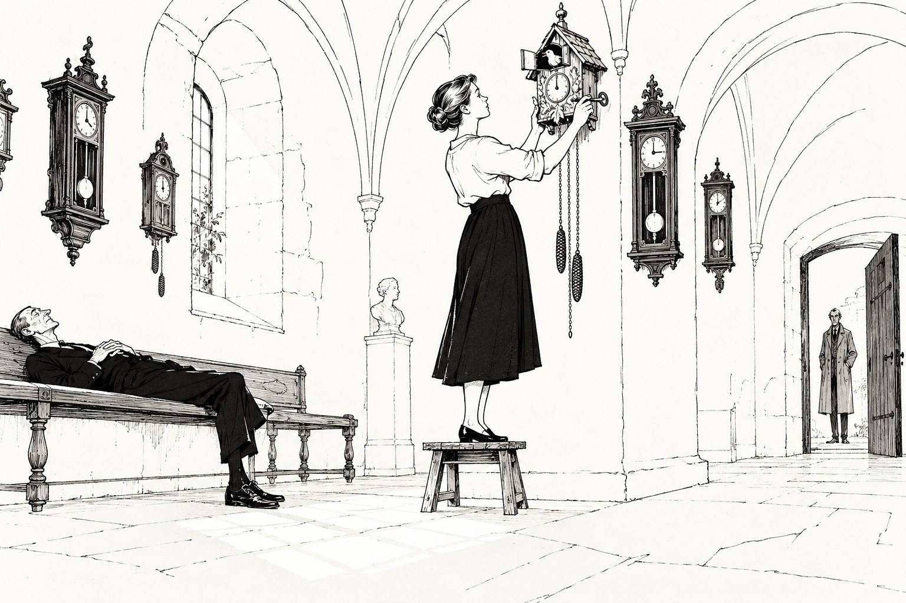

Наследство

Глава первая.
Письмо от Хансена пришло в марте, и на этот раз оно было коротким.
«Иван, — писал Хансен. — У нас спор о наследстве. Я не знал, что такие ещё бывают, и посмотрел в словаре, что это слово значит. Спорят, впрочем, не два человека, а один, сам с собой. Хранитель музея в Пскове. Она просила не комиссию, а вас по имени. Похоже, про вас уже рассказывают».
Ветлугин перечитал последнюю фразу и решил, что у Хансена появилось чувство юмора. Потом решил, что Хансен не шутит, и собрался.
⁂
В Пскове шёл лёд. Великая потемнела и вздулась, по ней медленно и неохотно плыли серые льдины, и время от времени одна налезала на другую с долгим скрежетом, который было слышно даже в старом городе. Музей стоял на Запсковье, в купеческих палатах, таких старых, что стены у них были толще, чем иные комнаты, а окна сидели в них глубоко, как глаза у усталого человека.
Хранитель встретила его на крыльце. Ей было около тридцати, тёмные волосы у неё были так гладко зачёсаны, словно и они были внесены в какую-то опись, и руку она подала сухо и крепко.
— Татьяна Ольшанская, — сказала она. — Спасибо, что приехали. Я понимаю, что это глупо. Я просто не знаю, кого ещё спросить.
Она повела его через залы. Музей был музеем старой техники, и Ветлугин шёл мимо колёсных машин с бензиновыми моторами, мимо телефонов с дисками и проводами, мимо пишущих машинок, которые дети на экскурсиях обожали просто за то, что они грохочут. А потом они спустились по каменной лестнице в полуподвал, и Татьяна открыла дверь, и Ветлугин остановился на пороге.
Мастерская тикала. Часы были везде: на стенах в три ряда, на полках, на верстаках, на подоконниках, в углу стояли двое высоких напольных в деревянных футлярах, как два стражника. И все они шли. Каждые своим голосом: одни часто и тонко, другие тяжело и редко, и всё это вместе было похоже на дождь по жестяной крыше.
— Я их завожу, — сказала Татьяна, и получилось почти виновато. — Уже третью неделю. Он умер в конце февраля, во сне. Ему было девяносто три. И я почему-то не могу дать им остановиться. Хотя по правилам их надо остановить, чтобы не изнашивался механизм.
Савелий Мезенцев проработал в этой мастерской полвека. Он чинил часы Двадцатого века, вещи, которые давно никому не были нужны, потому что точное время давно знал любой браслет. Он собирал их по складам и чердакам, по старым домам, которые шли под снос, разбирал, чистил, вытачивал недостающие детали на маленьком токарном станке, и часы оживали. Зачем он это делал, никто толком не знал. Сам он говорил, что часы — единственная машина, которая ничего не делает, а только показывает, что время есть, и что людям полезно иногда об этом слышать.
Татьяна достала из кармана сложенный листок.
— Это лежало у него на верстаке, — сказала она. — Под лупой. Он всё знал заранее, мне кажется.
Почерк был стариковский, крупный, но твёрдый. «Всё, что здесь есть, — музею, спасибо ему, он меня терпел. Кроме одного. Часы с кукушкой и ключ от них — Тане. Она знает. С. М.».
— Кто такая Таня? — спросил Ветлугин.
— Никто, — сказала Татьяна. — Вот в том-то и дело. Я проверила всё. Его переписку за сорок лет, его друзей, всех, кто у него бывал, информаторий. У него не было ни детей, ни внуков, ни учеников. Он дружил с двумя стариками из Новгорода, оба умерли раньше него. Ни одной Тани. Ни одного письма Тане и ни одного письма от Тани.
Она подошла к дальней стене и остановилась перед часами. Часы были деревянные, в виде домика с острой крышей, с резными листьями по карнизу и маленькой дверцей над циферблатом. Внизу на цепочках висели две чугунные гири в виде еловых шишек. Они не шли.
— Эти я не завожу, — сказала Татьяна. — Ключа нет. И ещё — они не мои. То есть, естественно, ничьи, как и всё. Но они Танины.
Она объяснила всё коротко и точно, как составляют карточку экспоната. Часы шварцвальдские, начала Двадцатого века, единственный сохранившийся экземпляр с исправным кукушечным механизмом. Для музея это вещь не просто ценная, а главная. Вещи умерших возвращаются всем, это понятно. Последнюю просьбу исполняют, если это возможно, это тоже понятно. Но что делать, если просьбу исполнить нельзя, потому что нет человека, нигде не сказано.
— По смыслу — в фонд, — сказал Ветлугин.
— По смыслу — в фонд, — согласилась Татьяна. — У меня уже карточка написана. И я три недели не могу её подписать.
Ветлугин ждал. Он умел ждать, этому научило его ремесло. Татьяна постояла ещё перед часами, потом протянула руку и тронула маленькую дверцу над циферблатом, но не открыла.
— В первый день, когда я разбирала мастерскую, я их осматривала, — сказала она, не оборачиваясь. — И случайно тронула стрелку. И кукушка выскочила. Один раз, на остатке завода. И мне стало страшно. Не от неожиданности, вы понимаете. Как страшно бывает, когда вдруг что-то очень знакомое, а вспомнить не можешь. — Она наконец обернулась. — Меня тоже зовут Таня. Как и десятки тысяч других. Я понимаю, что это ничего не значит. Мы с ним пять лет работали через стену, и он ни разу не назвал меня иначе чем Татьяна Алексеевна. Но вы ведь ментоскопист. Вы можете посмотреть, есть ли в моей памяти эти часы. Я согласна. Я даже прошу.
Ветлугин посмотрел на часы, потом на неё. Всюду вокруг них тикало, и только эти одни молчали.
— Нет, — сказал он. — Не сейчас. Вы понимаете, Татьяна Алексеевна, ментограмма покажет вам то, что в вас есть. А вам, по-моему, нужно узнать, что было в нём. Давайте сначала поспрашиваем часы.
Глава вторая.
Часы сняли со стены вдвоём и положили на верстак Мезенцева, на кусок мягкого сукна, протёртого до дыр в тех местах, где ложились локти. Татьяна действовала уверенно и бережно, как действует человек, который разбирал часы сотни раз, и Ветлугин с удовольствием смотрел на её руки. Сам он в часах ничего не понимал и держал лампу.
Когда она сняла заднюю крышку, оба некоторое время молчали.
На внутренней стороне крышки, в самом углу, где его никогда не увидел бы никто, кроме часовщика, было нацарапано чем-то острым, гвоздём или отвёрткой: «ТАНЯ». Буквы были кривые, разного роста, «Я» смотрела в другую сторону. А ниже, тонко и аккуратно, взрослой рукой и совсем другим инструментом, стояло: «Июль 53».
— Двадцать пять лет, — сказала Татьяна. — Он никогда не портил корпусов. Никогда. У него на этот счёт были свои правила, он мне их три раза рассказывал. А тут он не зачистил. Даже дату поставил.
— Значит, журнал, — сказал Ветлугин.
Журналы мастерской Мезенцев вёл полвека, от руки, и стояли они в стенном шкафу по годам, сорок с лишним толстых тетрадей. Татьяна нашла нужную сразу. Июль пятьдесят третьего года занимал две страницы: что разобрано, что выточено, что запущено, какие часы привезли из старого дома под Островом. И среди всего этого, между «заменил анкерную вилку» и «чистка циферблата», одна строчка без всякой связи с часами:
«Экскурсия из интерната, младшая группа. Одна осталась в мастерской на весь день, Учитель разрешил. Заводила кукушку».
И больше ничего. Ни имени, ни интерната.
Интернат, впрочем, нашёлся за полчаса. В архиве музея хранились записи о всех группах, которые здесь когда-либо бывали, и в июле пятьдесят третьего такая группа была одна: пятилетки из интерната под Изборском. Татьяна запросила список группы и получила его через минуту.
Ветлугин смотрел, как она читает, и видел, в какой момент она дошла до нужной строчки. Она не вздрогнула и не изменилась в лице. Она просто перестала дышать, и секунды три не дышала.
— Я там училась, — сказала она. — Под Изборском. Двенадцать лет. Я не помню никакой экскурсии. Нас куда только не возили.
Тань в списке было две: Татьяна Ольшанская и Татьяна Векшина. Вторая давно работала во внеземелье, на какой-то дальней биостанции. Татьяна написала ей в тот же вечер, и ответ пришёл на следующий день, светлый и немного растерянный: «Танюша, привет, сто лет тебя не слышала! Псков помню, кремль помню, а часов никаких не помню, и никакого старика. Я же с начала до конца была со всеми. А вот ты, кажется, тогда куда-то пропала, и Учитель был недоволен. Или не тогда? Не помню. Пиши!»
⁂
Расследование на этом можно было бы и закончить. Но Татьяна была хранителем, а хранитель не закрывает опись, пока не просмотрена последняя полка. Последней полкой оказался нижний ящик верстака, и в нём лежала серая папка без надписи.
В папке была её жизнь.
Не вся, конечно, и ничего тайного. Всё открытое, что любой мог взять в информатории. Отчёт о выпуске интерната под Изборском с её именем, отчёркнутым карандашом. Распределение: история техники. Её первая статья, студенческая, про спусковые механизмы часов Двадцатого века, вся исчёрканная на полях резкими восклицательными знаками и одним сердитым «нет!». И на самом дне папки — копия письма в дирекцию музея, датированная пять лет назад. «Рекомендую на должность хранителя Т. А. Ольшанскую. Знает предмет лучше меня. С. Мезенцев».
Татьяна перебирала листки медленно, один за другим, как перебирают карточки чужого каталога. Потом сложила их обратно, выровняла края и закрыла папку.
— Я думала, что меня сюда взяли за статьи, — сказала она ровным голосом. — Я думала, что сама выбрала часы. Мне было пятнадцать, я нашла в интернате на чердаке старый будильник и четыре месяца его чинила. Я думала, это моё. А он… он все эти годы стоял у меня за спиной. И пять лет сидел за стеной и молчал. И называл меня Татьяной Алексеевной.
Она встала, подошла к часам на верстаке и посмотрела на кривое «ТАНЯ» с перевёрнутой буквой.
— Это я, — сказала она. — Я не помню. Но это я. Я до восьми лет писала «Я» в другую сторону, мне потом показывали тетради.
И Ветлугин увидел, что вместо радости, которой он, признаться, ждал, у неё на лице была обида. Такая, какая бывает у человека, который всю жизнь прошёл по тропинке, находя дорогу сам, и вдруг узнал, что тропинка была кем-то заранее расчищена.
Глава третья.
— Теперь снимите, — сказала Татьяна на следующее утро.
Она не спрашивала и не просила. Она стояла в дверях его комнаты в музейном флигеле, собранная, гладко причёсанная, и по её глазам было видно, что ночью она не спала.
— Я хочу знать, что он со мной сделал, — сказала она. — Тогда, в тот день. Почему он потом двадцать пять лет держал на меня папку. Это моя память, доктор, и я даю согласие.
И на этот раз Ветлугин согласился. Вчера она хотела узнать, кто она. Теперь она знала, кто она, и хотела увидеть, что с ней было. Это были разные просьбы, и на вторую у него не было ни довода, ни права отказать.
Портативный ментоскоп он поставил прямо в мастерской, на верстаке Мезенцева, и Татьяна села в старое кресло часовщика, с протёртыми подлокотниками. Вокруг тикали сотни часов, и Ветлугин подумал, что лучшего фона для такого сеанса не придумаешь.
⁂
Пятилетняя память не держит событий, и Ветлугин это знал. Она держит свет, звуки, запахи и одно-два лица, и всё это вперемешку, без порядка, как в коробке с пуговицами. Но тот день в памяти Татьяны лежал почти целым, как лежит в памяти человека всё, что сделало его тем, кем он стал.
Светлая мастерская, та же самая, только очень большая, потому что смотришь снизу. Тиканье со всех сторон, и от него смешно и немножко страшно. Старик с белой бородой и стёклышком в глазу, который приседает на корточки и серьёзно, как взрослой, показывает маленький медный ключ. Вот сюда вставляешь, вот так поворачиваешь, тихо, не торопись. И потом долго, всё утро, счастье: ключ в руке, стрелка вперёд, дверца хлопает, и деревянная птица выскакивает и кричит. Старик смеётся. Старик сидит за верстаком, ковыряется в других часах и ничего ей не велит, только иногда оборачивается и всё равно смеётся.
Потом острый гвоздь из жестянки на краю верстака и задняя крышка часов, которую старик почему-то оставил снятой. И буквы, которые не слушаются. И вдруг страшно: сейчас рассердятся. А старик подходит, смотрит на крышку очень долго и не сердится. Он берёт какой-то тоненький инструмент и что-то дописывает рядом.
А вечером, когда за ней приходит Учитель, она спрашивает самое главное:
«А можно мне их взять? Себе?»
И старик не смеётся. Он отвечает ей серьёзно, и ответ остаётся в памяти слово в слово: «Вот когда научишься их чинить».
И всё.
⁂
Татьяна просмотрела запись сама, после сеанса, дважды. Ветлугин не мешал. Он вышел в коридор и стоял у узкого окна, за которым по Великой плыли льдины, и думал о том, что за двадцать лет практики снял тысячи ментограмм, и среди них было не так уж много таких, в которых совсем ничего не болело.
Когда она вышла, лицо у неё было усталое и простое, без вчерашней собранности.
— Он ничего не делал, — сказала она. — Он просто стоял рядом. Я сама шла на звук, а он стоял рядом, чтобы не мешать. И потом тоже. Двадцать пять лет стоял рядом и не мешал. А когда я сама дошла до часов, написал одну строчку: знает предмет лучше меня. Это неправда, кстати. Я и сейчас знаю хуже.
Она разжала ладонь. На ладони лежал ключ, маленький, медный, потемневший, с дырочкой для шнурка.
— В столе, — сказала она. — В верхнем ящике, в конверте. На конверте написано «Тане». Я мимо этого конверта три недели ходила. Он лежал на самом верху, а я не открывала, потому что это было не мне.
И впервые за два дня она улыбнулась, чуть-чуть, уголком рта.
⁂
Решения она пока не знала, и они поднялись наверх, в главный зал, где на сводчатых стенах висели часы, уже ставшие музейными. По будням тут было пусто. Но не совсем.
На длинной дубовой скамье у стены лежал человек. Он лежал на спине, сложив руки на груди, с закрытыми глазами, и был так длинен, что ноги в стоптанных ботинках свешивались с конца скамьи. Лицо у него было длинное, сонное и немного печальное, как у лошади, которая долго везла телегу и наконец остановилась.
Ветлугин узнал его сразу, как узнал бы его кто угодно на Земле и далеко за её пределами, и остановился. А Татьяна спокойно прошла мимо, как проходят мимо привычной вещи.
— Доброе утро, Леонид Андреевич, — сказала она.
— Доброе, — сказал человек, не открывая глаз.
— Он приезжает раз в год, — вполголоса объяснила Татьяна Ветлугину. — Лежит здесь час или два и слушает. Он дружил с Савелием Игнатьевичем. То есть не дружил, а… они вместе молчали.
— Это тоже называется дружить, — сказал человек на скамье и наконец открыл глаза. Глаза у него были совсем не сонные. Он посмотрел на Татьяну, потом на ключ, который она всё ещё держала в кулаке, но так, что между пальцами торчала дырочка для шнурка. — Нашли, значит.
— Вы знали? — спросила Татьяна.
— Нет. Он мне ничего такого не рассказывал. Мы говорили в основном про часы. — Он помолчал, слушая, как сотня часов в зале перестукиваются друг с другом. — Однажды я его спросил, зачем он их чинит, если время и так все знают. Он сказал, что часам не нужно, чтобы их имели. Им нужно, чтобы их заводили. Я тогда подумал, что это про часы.
Он снова закрыл глаза и поудобнее устроил на скамье голову, и стало понятно, что больше он ничего не скажет.
⁂
На крыльце Татьяна остановилась. По реке с долгим скрежетом налезали друг на друга льдины.
— Хансен ждёт решения комиссии, — сказала она.
— Комиссия ничего не решает, — сказал Ветлугин. — За это её и терпят. Просьба была к Тане, Татьяна Алексеевна. Таня нашлась. Решать вам.
Глава четвёртая.
Наутро Ветлугин пришёл в музей за полчаса до открытия. Он сам не знал, зачем так рано. Наверное, потому, что так всегда приходят, когда что-то должно случиться и боишься пропустить.
Скамья у стены была пуста. Длинный человек уехал ещё вчера вечером, ни с кем не прощаясь, как, видимо, уезжал всегда.
А на дальней стене главного зала, прямо напротив входа, на самом видном месте, висели часы с кукушкой. Раньше там висел тяжёлый корабельный хронометр в латунном корпусе, гордость музея, и теперь он скромно стоял сбоку на подставке, словно уступил место старшему. Под часами была новая табличка, написанная аккуратно, по всем правилам: место и время изготовления, материал, устройство механизма, и в последней строке: «Восстановил С. И. Мезенцев».
Имени Тани на табличке не было.
Татьяна стояла перед часами на низкой скамеечке. На шее у неё, на тонком кожаном шнурке, висел медный ключ. Она сняла его, вставила куда нужно и стала заводить, тихо, не торопясь, так, как её когда-то учили. Потом подтянула гири, тронула пальцем маятник, и часы пошли.
— Я долго думала, — сказала она, не оборачиваясь. Она, оказывается, слышала, как он вошёл. — Всю ночь. Даже домой не ходила, сидела в мастерской. Если я их заберу, их больше никто не услышит. Единственные в мире, и висеть будут у меня на кухне. Это честно? Я думаю, нечестно. А если оставлю в музее просто так, как всё остальное, то получится, что он просил зря. Что никакой Тани не было. Это тоже нечестно.
Она слезла со скамеечки и снова надела шнурок с ключом на шею.
— А потом я вспомнила, что он написал: она знает. И подумала: а что я, собственно, знаю? Что часам не нужно, чтобы их имели. Им нужно, чтобы их заводили. Вот и всё. Часы — всем. А ключ — мне. Заводить их буду я, каждое утро, перед открытием. Пока могу. А потом… — Она чуть замешкалась. — Потом, наверное, тоже найдётся какая-нибудь Таня. Или не Таня. Хотя бы пяти лет. У нас летом много экскурсий.
Ветлугин ничего не сказал. Он смотрел на часы. Стрелка подошла к девяти, дверца над циферблатом хлопнула, и деревянная птица, постаревшая и потёртая, с облупившимся клювом, выскочила и прокричала девять раз на весь пустой сводчатый зал. И самые старые часы на стенах, казалось, притихли и слушали.
Татьяна стояла и улыбалась, и Ветлугин подумал, что видит на её лице ровно то же, что вчера видел на ментограмме у пятилетней девочки с ключом. В мире, где нечего наследовать, она всё-таки наследовала. Не часы, а то, что старик делал для неё двадцать пять лет: стоять рядом и не мешать.
⁂
Отчёт Хансену он отправил из глайдера, уже над лесом. Одна строчка, как в прошлый раз: «Просьба исполнена».
На этот раз Хансен не выдержал. «Как?» — написал он через минуту.
Ветлугин подумал и ответил: «Наследница нашлась и распорядилась».
Хансен больше ничего не спросил. Ветлугин представил, как старик сидит над этой строчкой и пытается найти для неё подходящую единицу измерения, и улыбнулся.
Под глайдером плыла весна. На полях ещё лежал снег, серый и ноздреватый, а реки уже все были тёмные и полные, и по всем идут льдины. Ветлугин смотрел вниз и думал о том, сколько за эти годы видел зазоров. Дверь с трещиной, сутки в чистом отчёте, чужая память, чужая война, девочка на причале, пустая запись. И теперь вот кукушка. Ни в одном из них не было единственного верного ответа. Были только люди, которые оказались там, где правила кончаются, и выбирали. Иногда правильно, иногда нет, а чаще всего так, что никто и никогда не узнает наверняка. И он подумал, что, наверное, так и должно быть. Что мир, в котором на всё есть правило, был бы очень удобным и очень пустым миром.
⁂
Дома, в Крыму, было уже тепло. Море лежало спокойное, в саду цвели миндали. Ветлугин разобрал письма, поужинал на веранде и лёг рано, потому что устал.
Вызов пришёл в третьем часу ночи. Он лежал в темноте, слушал, как тихо и настойчиво гудит на столе видеофон, и понимал, что сейчас кто-то на другом конце стоит перед дверью, за которой никто ничего не предусмотрел.
Он встал и взял трубку.